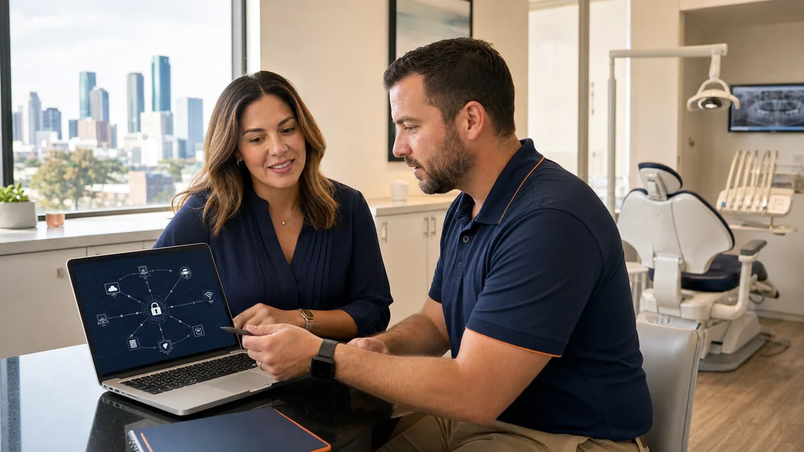

When a sensor stops capturing or the schedule will not load, the front desk usually has a patient waiting and three phone numbers to choose from. Calling the wrong company first can cost an hour. Calling nobody, and hoping a restart fixes it, can cost more.
This guide helps a dental office decide who to call for common problems, what to tell them, and which problems should go to IT immediately even when they seem minor. Keep a printed version at the front desk and in the doctor's office.
Build a one-page contact sheet
Every practice should have a single page that lists each technology vendor, what they support, how to reach them and any account or customer number they will ask for. Include:
- Your IT provider, with the normal and after-hours numbers
- The practice-management software vendor
- Imaging software, sensor and camera manufacturers, or the dealer who supports them
- Internet provider, and the backup internet provider if you have one
- Phone system provider
- Payment processor and claims or eligibility services
- Your electric utility
Store account numbers and support PINs somewhere staff can reach but patients cannot see. Do not write passwords on the sheet.
For vendor numbers, use the vendor's official site. Open Dental, for example, publishes its support contact details on its website. Open Dental: Contact Information Eaglesoft support runs through Patterson. Patterson Dental: Eaglesoft
Who usually owns which problem
These are typical starting points, not fixed rules. Your agreements decide the final answer.
One computer will not start, is very slow, or shows errors. Call IT. The cause is often the computer itself, an update or a network issue, even when the error appears inside dental software.
The practice-management software is down for everyone. Call IT first. They can check whether the server, database service or network is the problem. If those are healthy, IT should open a case with the software vendor and stay on it with you.
A sensor or intraoral camera will not capture in one room. Note the room, the sensor serial number and the exact message. Try the same sensor in another room if that is part of your normal routine. If it works elsewhere, the problem is likely the computer, USB connection or driver, which is an IT issue. If it fails everywhere, the sensor may need the manufacturer or dealer. Our imaging and sensor setup guide explains these layers.
Internet is down. Check whether the whole office is affected. If it is, call your internet provider for an outage check and let IT know, since they may be able to switch to a backup connection or confirm the firewall is healthy.
Phones are down. Many dental phone systems run over the internet, so check the internet first. If the internet is working, call the phone provider and let IT know.
Power is out. In much of the Houston area, CenterPoint Energy maintains the power lines and runs an outage tracker and alert sign-up. CenterPoint: Stay Informed About Outages Tell IT as well, so they can check the server and network after power returns.
A card reader or payment terminal fails. Call the processor named on the device unless your IT provider manages it.
Problems that go to IT right away
Some problems look small but should be reported immediately, during patient hours or not:
- Someone clicked a link or opened an attachment and then had to enter a password
- A screen shows a ransom note, or files suddenly have strange names or will not open
- A caller says they are from IT or a software vendor and asks for remote access or a password
- A computer starts behaving on its own: the mouse moves, windows open or close
- A login prompt appears that looks slightly wrong
HHS's healthcare cybersecurity guidance describes this exact kind of attack: an email posing as IT support from a billing company, leading staff to a fake login page that captures their credentials. HHS 405(d): Health Industry Cybersecurity Practices CISA's small-business guidance also recommends making it easy for staff to report suspicious activity quickly, without blame. CISA: Cyber Guidance for Small Businesses
Only allow remote access through the tool your IT provider has set up. If someone you did not call asks to connect, hang up and call your IT provider at the number on your contact sheet. Our guide on fake meeting updates and remote access tools covers a common version of this scam.
What to tell the help desk
A good first report saves the most time. Include:
- What happened, in plain words
- Where: which room, computer label or workstation name
- When it started, and whether anything changed beforehand (an update, a move, a new device)
- Who is affected: one person, one room or the whole office
- The exact error message, or a photo of the screen with patient information out of view
- How it affects patients today: a delayed appointment, a cancelled procedure, or no immediate impact
Keep patient information out of tickets and emails. Describe the patient chart that will not open by appointment time or room rather than by name, unless your IT provider has given you a secure way to share it.
Set priority by patient impact
Agree with your IT provider in advance on what counts as urgent. A reasonable starting point:
- Urgent: the schedule, charting, imaging or phones are down for the office, or a suspected security incident
- High: one operatory cannot work, or one key person cannot log in
- Normal: printing, one slow computer, a new user request, a software install
Write the agreed levels on the contact sheet so staff do not have to guess. If the office needs to keep seeing patients during a longer outage, follow your dental practice downtime plan.
Let one party coordinate
The most frustrating part of a dental IT problem is being passed between vendors who each say it is someone else's issue. Ask your IT provider to coordinate: open the vendor case, share technical details, and stay involved until the workflow is confirmed working. The practice should still know who each vendor is, but the front desk should not have to run the troubleshooting.
Odyssey provides dental IT help desk and remote support with on-site service across Greater Houston; contact Odyssey to set up a practice contact sheet.
Sources
Related guides

After-Hours Healthcare IT Support in Houston: How Escalation Should Work
Learn MoreDental Practice Downtime Plan: Keep Patient Care Moving During an IT Outage
Learn More